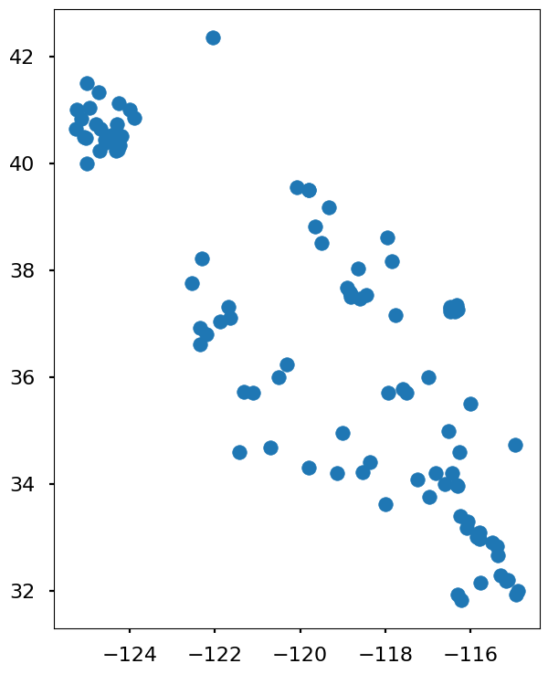
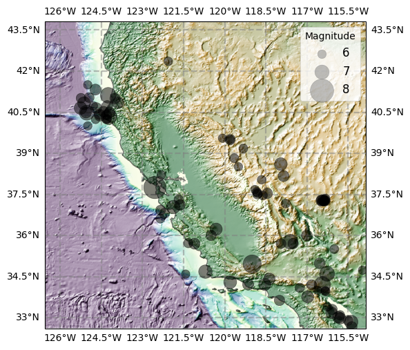

Workalong: Plotting geospatial data#
This workalong shows how to use rioxarray to read a raster file (a GeoTIFF in this case) to add topography to our plot. It also shows some tricks for getting good-looking topo plots.
Installing rioxarray#
Open a terminal
Load conda
module load condaLoad your environment:
conda activate /N/slate/$USER/conda_envs/easg690Install rioxarray:
conda install -c conda-forge --solver libmamba rioxarray
Workalong#
""" Import libraries """
# tell PROJ where to find the data files
import os
from pyproj import datadir
datadir.set_data_dir(f"/N/slate/{os.environ['USER']}/conda_envs/easg690/share/proj")
import matplotlib.pyplot as plt
import geopandas as gpd
import matplotlib as mpl
import rioxarray
import cartopy
import numpy as np
import cmocean
mpl.style.use('seaborn-v0_8-poster')
""" Load the earthquake data from the earlier exercise. """
data_file = "ca_earthquakes.shp.zip"
# Load the data into a GeoDataFrame
ca_earthquakes_gdf = gpd.read_file(data_file)
ca_earthquakes_gdf.plot();

""" Load the topo / bathymetry data. """
# set the filepath
topo_bathy_path = "https://github.com/taobrienlbl/advanced_earth_science_data_analysis/raw/09188e9e6a0cf230f8473c0ae95d2e1b9079df3a/lessons/13_geospatial_intro/data/western_us_topo_bathy_subset.tiff"
# Load the data with rasterio
topo_bathy_rxr = rioxarray.open_rasterio(topo_bathy_path)
topo_bathy_rxr
<xarray.DataArray (band: 1, y: 673, x: 703)> Size: 2MB
[473119 values with dtype=float32]
Coordinates:
* band (band) int64 8B 1
* x (x) float64 6kB -126.6 -126.5 -126.5 ... -114.9 -114.9 -114.9
* y (y) float64 5kB 43.81 43.79 43.78 43.76 ... 32.64 32.63 32.61
spatial_ref int64 8B 0
Attributes:
DataType: Generic
AREA_OR_POINT: Area
SourceBandIndex: 0
scale_factor: 1.0
add_offset: 0.0""" Load the state boundary data. """
ca_shapefile_path = "ca_inflated.shp.zip"
ca_shapefile_gdf = gpd.read_file(ca_shapefile_path)
""" Generate a plot of earthquake locations on top of the topography / bathymetry data. """
projection = cartopy.crs.PlateCarree(central_longitude=-120)
fig, ax = plt.subplots(figsize = (6,6), subplot_kw={"projection": projection})
# ****************
# topo hillshade
# ****************
# set the light source for the hillshade
ls = mpl.colors.LightSource(azdeg=315, altdeg=45)
# convert the topo data to this projection
ax_proj = ax.projection.proj4_init
topo_bathy_rxr_proj = topo_bathy_rxr #.rio.reproject(ax_proj)
# get the x and y grid spacing
dx = abs(topo_bathy_rxr.x[1] - topo_bathy_rxr.x[0])
dy = abs(topo_bathy_rxr.y[1] - topo_bathy_rxr.y[0])
# convert the grid spacing from degrees to meters
rearth = 6371000 # in meters
dx_meters = float(np.deg2rad(dx) * rearth * np.cos(np.deg2rad(topo_bathy_rxr.y[0])))
dy_meters = float(np.deg2rad(dy) * rearth)
# generate a blended hillshade
blend = ls.shade(
topo_bathy_rxr_proj.values.squeeze(),
cmap=cmocean.cm.topo,
vmin = -3000, vmax = 3000,
blend_mode="hsv",
dx=dx_meters, dy=dy_meters,
vert_exag=10,
)
# plot the hillshade
left, bottom, right, top = topo_bathy_rxr_proj.rio.bounds()
extent = [left, right, bottom, top]
ax.set_extent(extent, crs=cartopy.crs.PlateCarree())
ax.imshow(blend, cmap="Greys", extent=extent, transform=cartopy.crs.PlateCarree(), zorder=0)
# ****************
# earthquakes
# ****************
# convert the earthquake data to this projection
ca_earthquakes_gdf_proj = ca_earthquakes_gdf.to_crs(ax_proj)
# plot the earthquake locations with magnitude proportional to size
ca_earthquakes_gdf_proj.plot(
ax = ax,
color = "black",
markersize = np.exp(ca_earthquakes_gdf_proj.mag)/5,
zorder = 10,
alpha = 0.5,
)
# create a legend for the marker sizes
# set the marker sizes
sizes = [6, 7, 8]
# convert the sizes to the radii used in the plot
exp_sizes = np.exp(sizes)/5
labels = [f"{s}" for s in sizes]
# generate a plot that doesn't show any data; this is just so we can create a legend
handles = [plt.scatter([],[], s=s, color="gray", alpha=0.5) for s in exp_sizes]
# create the legend
leg = ax.legend(handles, labels, title="Magnitude", loc="upper right", fontsize=12)
# ****************
# geographic features
# ****************
# gridlines
gl = ax.gridlines(draw_labels=True, color="gray", alpha=0.5, linestyle="--")
ax.coastlines(resolution="10m", color="black", linewidth=1, alpha = 0.5)
# set the extent
plt.show()
